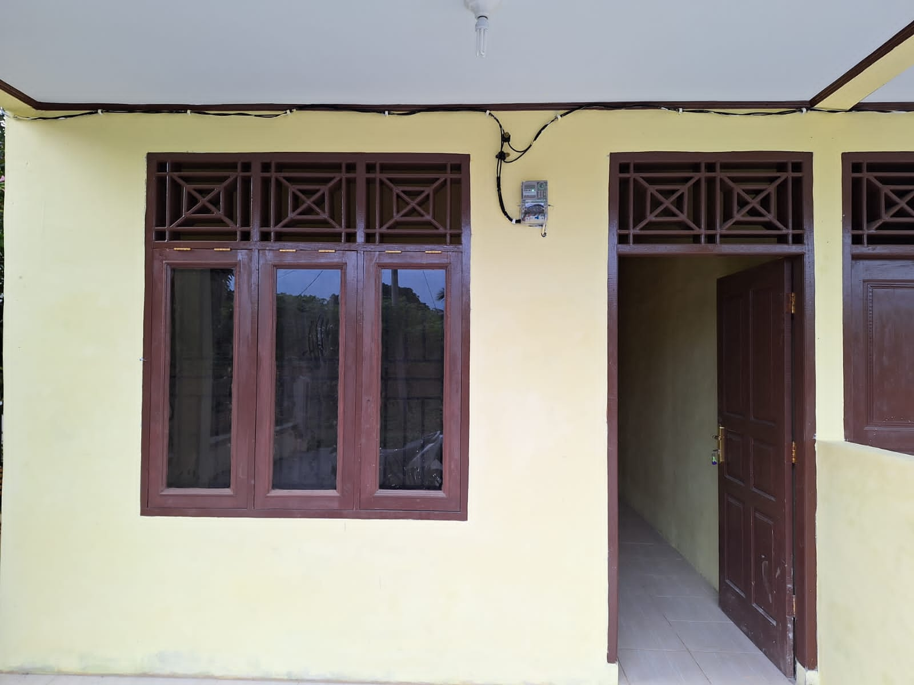

Keamanan
Sistem keamanan terpadu agar Anda tenang tinggal di lingkungan kos.
Kos Hafiz Ikpos
Kos & kontrakan di Sibuhuan
Sibuhuan · Padang Lawas · Sumatera Utara
Mencari kos di Sibuhuan atau kontrakan di Padang Lawas? Kos Hafiz Ikpos menawarkan hunian bersih, aman, dan strategis dekat MAN 1, kantor, dan jalan utama.
Kami fokus pada kenyamanan penghuni: lingkungan tenang, akses mudah, dan pengelolaan yang responsif untuk kebutuhan kos Sibuhuan jangka panjang.
Kos Hafiz Ikpos menjadi pilihan banyak mahasiswa dan pekerja yang membutuhkan tempat tinggal di Sibuhuan dengan nuansa rumah — bukan sekadar kamar kosong.
Lokasi kami sangat strategis: hanya beberapa menit ke MAN 1 Padang Lawas, kantor pemerintahan, bank, dan transportasi umum. Cocok jika Anda mencari kos dekat pusat Sibuhuan atau kontrakan di wilayah Padang Lawas dengan penanda jelas di peta.
Setiap area dijaga kebersihannya, dengan prioritas keamanan dan ketenangan agar Anda bisa fokus belajar dan bekerja.

Fasilitas yang mendukung aktivitas harian Anda di Sibuhuan — dari keamanan hingga kenyamanan istirahat.
Sistem keamanan terpadu agar Anda tenang tinggal di lingkungan kos.
Pasokan air untuk kebutuhan mandi dan kebersihan sehari-hari.
Instalasi listrik yang memadai untuk aktivitas dan pengisian daya.
Area parkir untuk kendaraan penghuni.
Perlengkapan tidur yang nyaman untuk istirahat berkualitas.
Privasi dan kenyamanan mandi di kamar Anda.
Unit AC sedang dipersiapkan untuk kenyamanan suhu ruangan.
TV dan layanan kabel direncanakan untuk hiburan di kamar.
Internet fiber sedang dalam proses instalasi.
Berlokasi di jantung Sibuhuan, tepat untuk Anda yang mencari kontrakan di Padang Lawas dengan akses ke pendidikan dan layanan kota.
Jl. Kol. H. M. Nurdin (Ikpos Padang Luar), Sibuhuan — samping Kantor Pengadilan Lama, depan MAN 1 Padang Lawas. Posisi di area tengah memudahkan akses ke berbagai keperluan di Padang Lawas.
Jarak singkat ke MAN 1 dan institusi pendidikan lain di Sibuhuan.
Akses cepat ke layanan pemerintahan dan bank di pusat kota.
Di jalan utama dengan angkutan umum dan ojek online.
Jawaban singkat untuk pencarian seperti kos di Sibuhuan atau kontrakan Padang Lawas.
Di Jl. Kol. H. M. Nurdin (Ikpos Padang Luar), samping Kantor Pengadilan Lama dan depan MAN 1 Padang Lawas — mudah dicari di Google Maps dengan nama "Kos dan Kontrakan Hafiz Ikpos".
Hubungi WhatsApp resmi +62 851-6308-9473. Tim kami akan menginformasikan harga, ketersediaan kamar, dan jadwal kunjungan.
Ya. Lokasi dekat sekolah dan pusat kota cocok untuk mahasiswa serta profesional yang butuh hunian stabil di wilayah Sibuhuan dan Padang Lawas.
Gunakan hanya nomor WhatsApp resmi yang tertera di situs ini. Kos Hafiz Ikpos tidak meminta DP via transfer ke rekening yang tidak dikonfirmasi.
Kamar terbatas — konfirmasi lebih awal melalui WhatsApp resmi.
Chat kami untuk info ketersediaan, survey lokasi, dan syarat sewa kos di Padang Lawas.
Cek ketersediaan kamarNomor resmi hanya +62 851-6308-9473. Kos Hafiz Ikpos tidak meminta DP melalui transfer tanpa konfirmasi. Selalu pastikan Anda berkomunikasi dengan nomor resmi sebelum membayar.